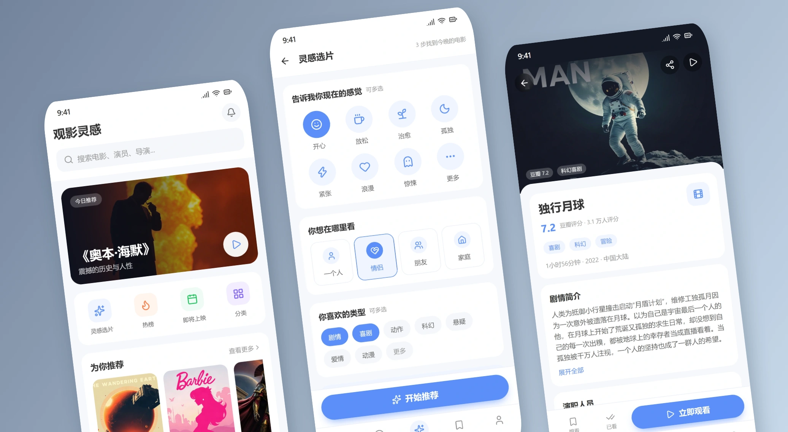
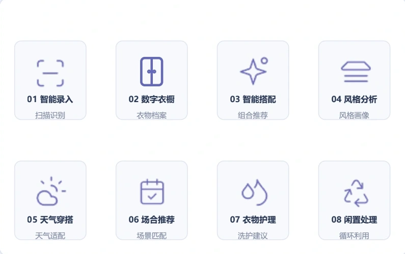

Yibin Zheng
交互设计作品集
我是工业设计专业交互方向的学生。我关注人们如何选择，以及设计怎样让选择变得容易。

信息架构 / 交互原型

图标系统 / 界面应用
Ambient lightstudy
Dispersion herorender
Procedural herosequence
Dolly trackstudy
No published studies for this tag.